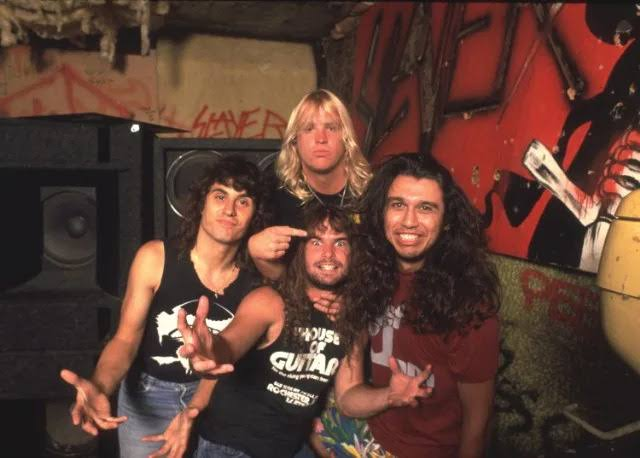
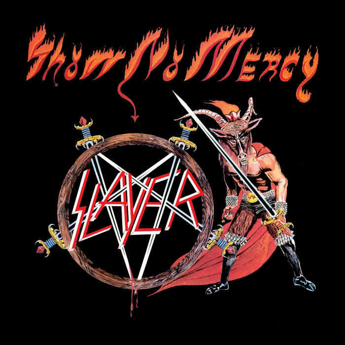
Kiadás: 1983. december 3
SHOW NO MERCY
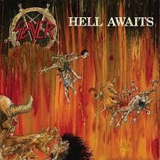
Kiadás: 1985. április 8
HELL AWAITS
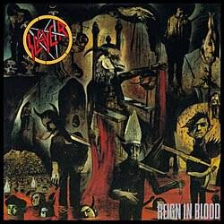
Kiadás: 1986. október 20
REIGN IN BLOOD
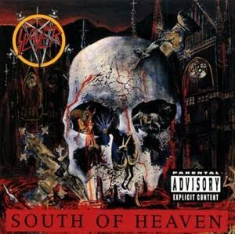
Kiadás: 1988. július 5
SOUTH OF HEAVEN
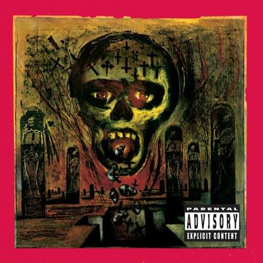
Kiadá: 1990. október 9
SEASONS IN THE ABYSS
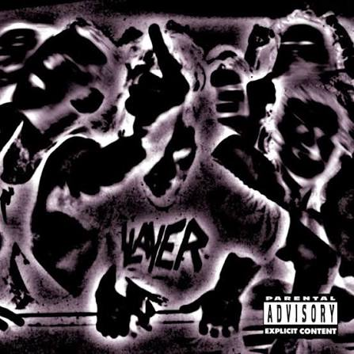
Kiadá: 1996. május 28
UNDISPUTED ATTITUDE
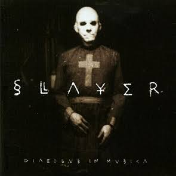
Kiadá: 1998. június 9.
DIABOLUS IN MUSICA
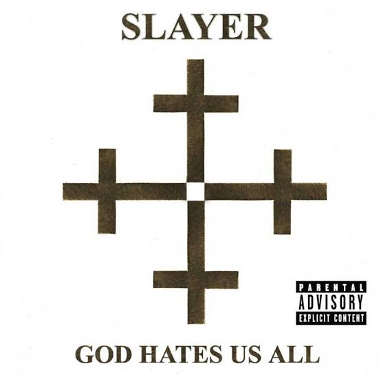
Kiadás: 2001. szeptember 11
GOD HATES US ALL
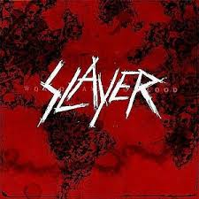
Kiadás: 2009. november 3
WORLD PAINTED BLOOD
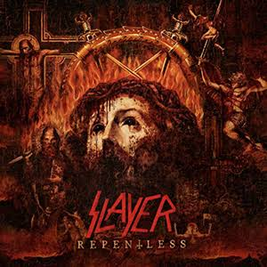
Kiadás: 2015. szeptember 11
REPENTLESS